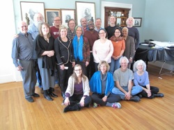

Dear Friends,
In 2010-11, my predecessor Mark Johnson traveled some 50,000 miles to meet with individuals and groups in our U.S. Fellowship of Reconciliation network. These cross-country tours sought, in part, to assess the needs and health of our national network of chapters, affiliates, and individual members. In his role as executive director, Mark talked to FOR leaders, long-time local activist members, and those who were new to FOR.
His primary queries were:
- What most concerns you in the world today as members of FOR?
- What are you doing to respond to that concern as individuals and as a chapter/affiliate?
- How can FOR's network help you and how can you help others in the Fellowship respond?
In the response to these queries, Mark found a deep need and desire to see our national staff support the grassroots activism and local group structure in the United States. Local groups have done and continue to do a tremendous amount for peace and justice on their own and with few resources. The potential for good is exponential through FOR's national network; members voiced a need for more coordination and support to leverage those possibilities.
At the same time, many international partners, while grateful for FOR’s presence abroad, urged Mark to turn FOR-USA’s attention to the seeds of violence exported by the United States. As U.S. citizens, we are best positioned to apply the power of our privilege to stem the tide of militarism flowing off our shores. The feedback on Mark’s national tour to our international work was interesting as FOR members “recognized the foci of the current work in Colombia (and more broadly the Task Force on Latin America & the Caribbean) and Iran (and more broadly the Task Force on the Middle East) but did not appreciate these in detail. The recommitment to local chapters and domestic issues was greeted positively (even emotionally at times).”
The results of Mark’s investigation were arresting, though perhaps not surprising. Local groups as source and sustenance of the Fellowship of Reconciliation's activism stretches back to our origins, when 68 people met in Garden City, New York in November 1915 to “establish a world order based on love.” Though the group was an outgrowth of the forerunner of the International Fellowship of Reconciliation (born in Europe in 1914 in opposition to World War I) and thereby necessarily had a global dimension, the focus of its work in those early days was to mobilize a broad and U.S.-based community of principled activists to work against conscription and militarism, labor for economic and racial justice, and advocate for legal protection of conscientious objectors.
In the nearly 100 years since, we expanded our outreach to create a presence abroad that has included the meaningful work of sponsoring civilian diplomacy delegations to such regions as the Middle East and the former Soviet Union and providing protective accompaniment in Latin America. Yet, as FOR embraces the needs and challenges of the twenty-first century, we find the call to turn fully back to the work of building and tending to our national network and infrastructure.
Throughout 2012, the National Council worked with Mark Johnson to frame a strategy that would respond to this call. A model that organized activism in regions of the country was constructed, repurposing staff from a predominately international focus to nonviolent change work that sees the transformation of the scene in the United States as the highest priority for effectiveness. Though it was not a driving factor, it was also noted that the maintenance of staff with international portfolios placed a heavy financial burden on FOR and this shift would also be more economical.
FOR announced this new organizational model in December 2012 with the hiring of Rev. Lucas Johnson as a regional coordinator/organizer, the first position tuned to the new strategy. At the same time, Mark Johnson announced his forthcoming retirement.
The search process that ensued in 2013 for a successor prioritized capacity in grassroots organizing with diverse and younger populations while at the same time requiring expertise in organizational and financial leadership. I am pleased to continue the work of Mark and the National Council as we transition fully into this new model, deeply committing our national programmatic efforts to strengthen and network our chapters, local affiliates, religious peace fellowships, and other grassroots-based initiatives.
FOR’s theory of social change understands our work as a movement that begins at the individual level working locally through active efforts by dedicated, passionate people, many of whom act from spiritual leadings, whose clarity of purpose, vision and success actively moves through communities and structures representing wider and wider circles of peoples until systems are transformed in sustainable ways for the foreseeable future. Our field of intended effective social change is that of structural violence in the United States and propagated by the United States throughout the world.
Grounded in this regional strategy, we will be able to more fully live the tenets of this theory through our leanings and our learnings, through our actions and commitments, through our embrace of a nonviolent way of life that acknowledges first our responsibility to change ourselves as we ask the world to change.
Our self-identity has always been as a web of deeply committed, passionate individuals. It is a true pleasure and privilege to be with you in our common purpose and work. May our movement grow and may we see signs of transformation.
Grace and peace,
 Reverend Kristin Stoneking Reverend Kristin Stoneking
Executive Director
Fellowship of Reconciliation
Photos: (1) FOR National Conference in 1921; courtesy Sarah Schindler. (2) FOR National Council and Staff, February 24, 2014 in Nyack, N.Y.; photo by Sally Savage.
|